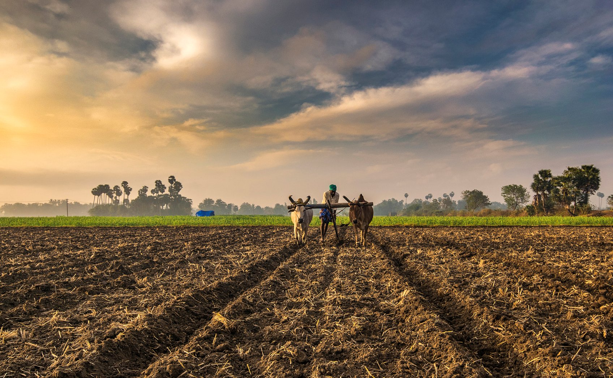

Around the world, approximately 27% of the population (two billion people) rely on agriculture for their livelihood across 570 million farms. Of these 570 million farms more than 90% are run by an individual or a family. These small operations may not have the tools and resources available to make optimal decision(s) for their individual needs.
...That's where we come in. With the power of new technologies like machine and deep learning we believe it's possible to help farmers determine what to grow and how to maximize their yield...improving profits and livelihood for everyone involved.
